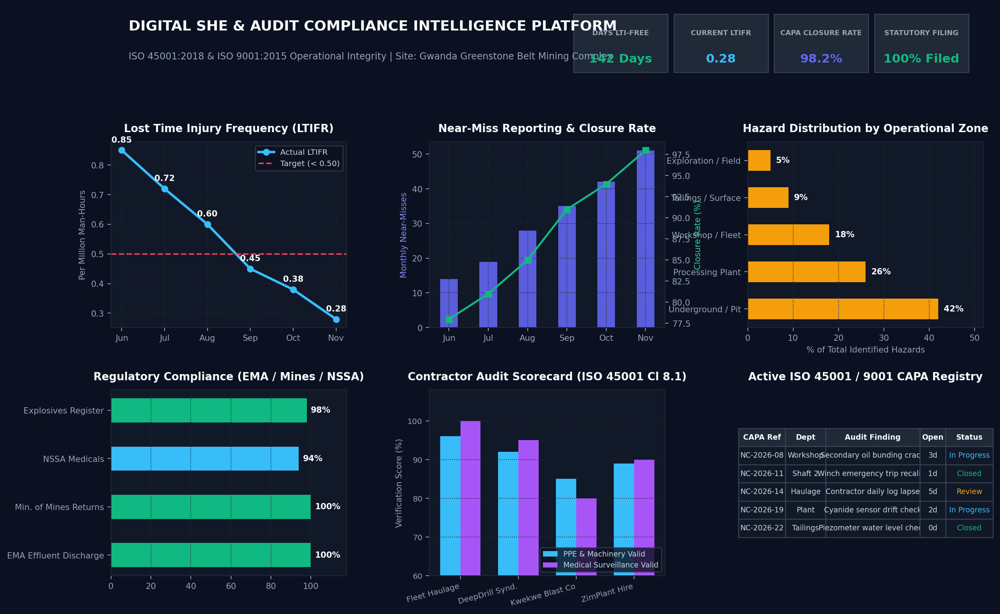

Digital SHE & Audit Compliance Intelligence Platform
Automating ISO 45001 and ISO 9001 statutory auditing for heavy industry and mining through consolidated safety, environmental, and quality reporting.

The challenge
Heavy industrial and mining operations must manage requirements spanning national environmental policies and standards such as ISO 45001 (occupational health and safety) and ISO 9001 (quality management). Paper shift logs and disconnected spreadsheets can delay hazard response, obscure injury trends, and make audit preparation time-consuming and error-prone.
The solution
A proposed operational dashboard architecture consolidates daily pre-shift equipment inspections, near-miss incident logs, and statutory environmental monitoring into a centralized intelligence platform.
- Leading safety analytics: relate near-miss reporting to corrective and preventive action (CAPA) closure time.
- Compliance guardrails: monitor environmental thresholds and statutory filing deadlines.
- Contractor scorecards: track safety and medical certification status for haulage and drilling contractors.
- Digital audit registry: replace paper binders with a searchable non-conformance register.
Impact indicators
The following figures are supplied project figures. Keep them on the live portfolio only if they are supported by measured results and can be explained in an interview.
Data science meets industrial quality systems
Suggested headline: Data Scientist & Quality Systems Specialist (ISO 9001 / ISO 45001)
“I turn complex operational and compliance workflows into decision dashboards and automated reporting systems. Combining internal-auditing rigor with modern data science, I help industrial, mining, and SME teams improve operational visibility and audit readiness.”